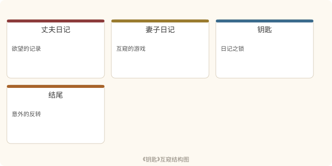

钥匙
一、基本信息
| 作者 | 谷崎润一郎 |
|---|---|
| 成书/出版 | 1956年（作者页 B168 口径：钥匙（1956）） Junichiro Tanizaki — Encyclopaedia Britannica（百科全书） |
| 国别/地区 | 日本 |
| 时代 | 现当代 · 20世纪 |
| 体裁 | 中篇小说 |
| 语言 | 日语 |

《钥匙》互窥结构图（主题·结构图）
二、创作背景
作者页（B168）：谷崎 major_works 载'钥匙（1956）'（B168 作者页定位，详见 xixue 条核对）。
文体（通说待核）：夫妻双日记体——各自偷看对方日记的性心理游戏。
三、内容脉络
丈夫与妻子互窥日记：欲望的'钥匙'互锁（通说待核）。
结尾的意外（通说待核）。
四、主要人物表
| 人物 | 身份 | 说明 |
|---|---|---|
| 丈夫 | 教授 | 日记其一（通说待核） |
| 郁子 | 妻子 | 日记其二（人名通说待核） |
五、主题与艺术特点
- 日记的互窥结构（通说）。
- 老年欲望的直视（通说待核）。
- '恶魔主义'的晚期（通说——谷崎美学）。
六、影响与评论
- 作者页：谷崎晚年代表作（B168 作者页口径）。
Junichiro Tanizaki — Encyclopaedia Britannica（百科全书） - 与《疯癫老人日记》（1961—62）并列为晚期日记体双作（B168 作者页谱系）。
Junichiro Tanizaki — Encyclopaedia Britannica（百科全书）
七、阅读建议
难点
- 双日记的互文。
- 欲望书写的伦理。
- 《钥匙》（上海译文出版社，通说待核）。
- 日文原版（新潮文库）。
先《细雪》《春琴抄》后本作。
八、待核实
- 1956年（《中央公论》说）核对。
- 妻子名（郁子）核对。
- 结尾细节待核。
本页主要来源
谷崎润一郎的其他收录作品：细雪